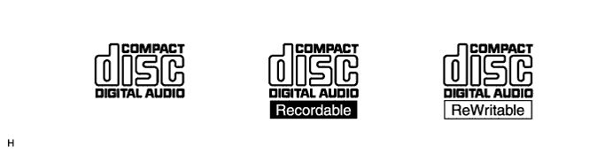

使用ディスク
このプレーヤは、図のマークのついた音楽用CD、CD-R(CD-Recordable)およびCD-RW(CD-ReWritable)のみ使用できる。

ディスク使用上の注意
- ■ 注 意 ■
- コピーコントロールCDは使用できない。
- DualDISC(CD、DVDを表裏に貼り合わせたもの)は使用できない。
- DTS-CDは使用できない。
- CD-TEXTは使用できない。
- CD-R、CD-RWは、記録状態やディスクの特性、傷、汚れ、長時間の車室内環境における劣化により、再生できない場合がある。
- ファイナライズ処理されていないCD-R、CD-RWは再生できない。
- ディスクには、指紋、汚れおよび傷などを付けないように取り扱う。
- ディスクを扱うときは、中心の穴と端を挟んで持ち、ラベル面を上にする。
- ディスク取り出しボタンを押して、ディスクが飛び出た状態のまま長時間放置した場合、CDが変形し、使用できなくなるおそれがある。
- セロハンテープ、シール、CD-R用のラベル、レンタルCDのラベルなどが貼ってあるディスクまたははがしたあとのあるディスクを使用した場合、ディスクが取り出せなくなったり、機器の故障の原因となるおそれがある。
- ディスクは、直射日光を避けて保管する。(ディスクが変形し、使用できなくなるおそれがあるため)
- 直径12cmまたは8cmの円形以外のディスクは再生できない。
- 特殊形状のディスクは、機器の故障の原因となるので、使用しない。
- 記録部分に透明または半透明部分があるディスクは、正常に出し入れや再生ができなくなるおそれがあるので、使用しない。
- シングルCD(8cm)の再生時、アダプターは不要。
- □ 参 考 □
- 寒いときや雨降りのときは、車内のガラスが曇るように、プレーヤ内部にも露(水滴)が生じることがある。この場合、音が飛んだり、再生が停止したりするので、しばらくの間、換気または除湿してから使用する。
- 悪路走行などでプレーヤが激しく振動した場合、音飛びすることがある。
 |
クリーニング
- ■ 注 意 ■
- レンズクリーナーを使用すると、プレーヤのピックアップ部の故障の原因となるおそれがあるので使用しない。
ディスクの汚れは、プラスチックレンズ用メガネふきなどの柔らかく乾いた布で、中心から外側へ放射状方向に軽く拭いて清掃する。
- ■ 注 意 ■
- 手で強く押したり、かたい布でこすると表面に傷がつくことがある。
- レコードスプレー·帯電防止剤·アルコール·ベンジン·シンナーなどの溶剤や化学ぞうきんなどを使用すると、ディスクが損傷し、使用できなくなるおそれがある。